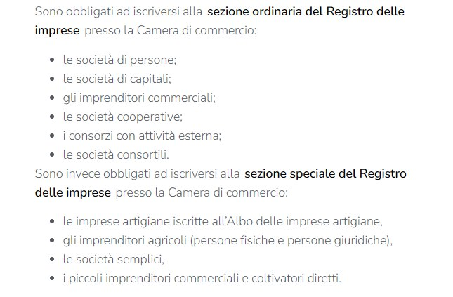
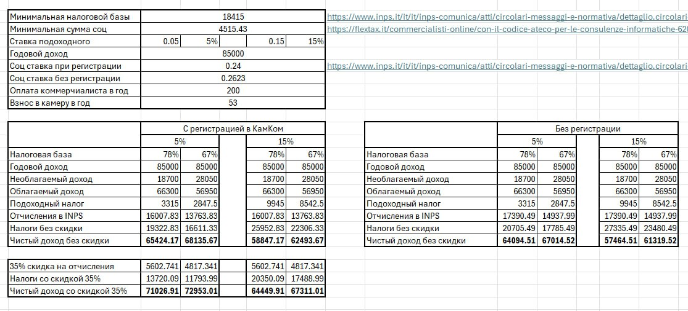

🔴ОТКРЫТИЕ ИП
У нас тут периодически возникают поиски коммерчиалиста, и пока никого не порекомендовали, и вот почему:
- хорошие есть, но они заняты и просят их не рекомендовать (столкнулась с таким);
- клиент "с улицы" тоже не очень интересен хорошему востребованному бухгалтеру, поэтому предпочитают тоже по рекомендации брать точно адекватных клиентов.🤗
- у нас, эмигрантов, много нюансов с декларированием зарубежных доходов. И не очень много бухгалтеров готовы с этим вопросом разбираться и возиться.
- ещё нюанс: у эмигрантов бывают ИП для пермессо, и собственно, нормальная деятельность не ведётся, но нужно фактурировать правильно доходы для продления ВНЖ, которые приходят из окольных источников, и с этим, возможно, тоже не всем бухгалтерам хочется связываться.
Классификация экономических кодов ATECO https://www.istat.it/it/archivio/17888
на официальном сайте Istat - L'Istituto nazionale di statistica è un ente di ricerca pubblico (вводим поиском тип деятельности - просто своими словами) - открывается елочка с номерами кодов и описанием (нумерация классификации очень похожа на РФ коды).
Статья на Fiscozen Как посмотреть налоговую базу по вашему codice ATECO
Поскольку табличка пропала из статьи, то вот ссылка на Вики В ней и табличка, и ссылка на источник
Первоисточник - налоговая Италии - Agenzia delle entrate
Поясняется отдельно для резидентов и для нерезидентов. Кто без итальянского - гугл поможет :)
У Fiscozen есть 2 разные статьи:
1) Partita IVA ditta individuale o libero professionista: cosa cambia?
Либеро профессиониста - у вас нет активности ремесленника (когда вы что-то создаете) или коммерсанта (когда вы что-то перепродаете).
Дитта индивидуале - у вас есть активность ремесленника или коммерсанта (и у вас возникает обязанность записаться в камера ди коммерчио и платить обязательные взносы).
Дополнение из жизни (не из статьи): тут в чате (у консультантов, гидов и дизайнера) партита ива зарегистрирована как дитта, при этом они не ремесленники и не коммерсанты и не регистрировались в камера ди коммерчио. То есть, если вы либеро профессиониста, в сертификате об открытии ип вам всё равно пишут "дитта индивидуале", и это нормально. (Однако, почему-то обзоры в сети обозначают именно разделение по линии: дитта - это коммерс/ремесленник, либеро проф - работа "своим знанием")
2) Ditta individuale e impresa individuale: qual è la differenza?
Ditta - может быть импрезой, а может и не быть. Impresa же всегда является диттой.
Импреза должна включать такие характеристики экономической активности:
Avere un’organizzazione
Essere condotta in maniera professionale
Deve avere come oggetto lo scambio di beni e servizi.
Дитта - это коммерческое наименование предпринимателя, которое идентифицирует его как субъекта, имеющего право осуществлять предпринимательскую деятельность.
Статья Fiscozen с обзором и ссылками на законодательство
L’articolo 1 comma 54-89 della legge 190/2014 - реквизиты для доступа к режиму форфеттарио.
🖍️ avere un incasso totale annuo inferiore a 85.000€.
🖍️ avere la residenza in Italia
🖍️ non essere socio di società di persone
🖍️ non essere socio di maggioranza in società di capitali che operano nello stesso settore della tua attività autonoma.
🖍️ eventuale RAL, da lavoro dipendente minore di 30.000€
🖍️ gli eventuali compensi che hai versato ai collaboratori devono essere inferiori a 20.000€ annui
Цитата из того же закона legge 190/2014, art.1, comma 57 про требование резиденцы и исключения:
Non possono avvalersi del regime forfetario:
a) le persone fisiche che si avvalgono di regimi speciali ai fini dell'imposta sul valore aggiunto o di regimi forfetari di determinazione del reddito;
b) i soggetti non residenti, ad eccezione di quelli che sono residenti in uno degli Stati membri dell'Unione europea o in uno Stato aderente all'Accordo sullo Spazio economico europeo che assicuri un adeguato scambio di informazioni e che producono nel territorio dello Stato italiano redditi che costituiscono almeno il 75 per cento del reddito complessivamente prodotto;
На сайте налоговой в условиях режима форфеттарио написано: "доход по подчинённой работе за прошлый год не должен быть больше 30000€".
Вот еще обзорная статья на Фискомании с примерами и частными случаями.
Действительно, чтобы войти в режим форфеттарио, доходы от наемной работы за прошлый год не должны быть больше 30000 евро.
Если они были больше, но человек уволился в прошлом же году, тогда эти доходы не учитываются. Но если после увольнения в том же году снова пошёл в найм, то учитываются.
На сайте налоговой можно скачать приложение, которое помогает заполнить форму и потом делает PDF
В теории оно же позволяет подготовить файл специального формата для отправки. Но я так и не понял как это делать онлайн и сходил ножками. У приложения есть один глюк - если вы сегодня заполняете форму думая отнести через два дня и ставите дату позже, чем сегодня - у приложения едет крыша и оно не сохраняет ваш черновик и ругается. На компе лайфхак - просто поставить системную дату того дня, когда будете подавать. Понятное дело, что если вы собираетесь сдавать форму после фактического начала деятельности, то это не ваша проблема.
Естественно, надо понимать, что же вы именно заполняете в этом самом модуле в этой самой программе.
ССЫЛКА БОЛЬШЕ НЕ РАБОТАЕТМне помогла вот эта статья
Ну и на ютубе тоже есть видео по заполнению именно через программу формы АА9/12 и именно forfettario. Смело используем поиск :)
Всем привет! Опишу свой опыт открытия partita iva (либеро профессиониста, в сертификате написано ditta individuale).
▶️ На сайте налоговой я скачала и заполнила модуль AA9/12, который требуется для открытия партиты. Инструкция по заполнению есть в самом модуле (там 4 страницы - для заполнения и отправки, остальные страницы, их много - это инструкция).
➡️ Важно, если вы хотите режим форфеттарио (упрощенку с налогом 5% в первые 5 лет): не забыть поставить цифру 2 в quadro B, где выбираем regime agevolato. Цифра 2 - это как раз выбор режима forfettario.
➡️ Сначала я отправила заполненный модуль через почту PEC (приложив также копию уд.личности - карту д'идентита в моём случае) и написав в теме письма (на сайте налоговой указано, что надо именно так писать тему) "dichiarazione di inizio attività". В случае отправки модуля через PEC ответ (сертификат об открытии партиты) должен приходить на ваш PEC, с которого вы отправляли модуль.
➡️ Подождала сутки (рабочий день), но ответ мне не пришёл. Хотя несколько человек здесь в чате писали, что им ответ с сертифткатом приходил быстро (в других регионах и коммунах).
➡️ Тогда я взяла аппунтаменто в налоговую. Там можно, начиная с 6 утра текущего дня, взять онлайн талончик на визит в этот же день (кол-во талонов ограничено). Этот способ должен работать по всей Италии - на сайте налоговой выбирается любой регион и город. Я встала в 6 утра, забронировала аппунтаменто. Потребовался кодиче фискале - нужно правильно заполнить данные, в том числе коммуну происхождения, а то система дальше не пускает. В моем случае коммуна происхождения это FEDERAZIONE RUSSA (я списала со своей тессеры санитариа). Ещё нужен эмейл - на него приходит письмо, надо кликнуть в нём ссылку-подтверждение.
➡️ В 8.30 я была в адженции первая, подала заполненный модуло AA9/12 и карту д'идентита (её откопировали), и примерно в 8:50 мне открыли партиту и отдали сертификат об открытии с печатью и подписью.🌟
➡️В сертификате у меня указан только основной мой код (хотя второй код тоже есть, я его написала в модуле, и сотрудница его внесла и проверила). Чтобы не переживать, что у вас в кодах, можно попросить дать вам копию вашего заполненного модуля с подписью, что его приняли; либо, если вы отправляете через PEC, он у вас будет зафиксирован в почте, что = подписи о приемке)
➡️Про PEC. В нашей коммуне (Савона) этот способ медленный. Приходят много PEC, их отправляют в секретарию, потом открывают партиту, и проходит неделя. Быстрый способ открытия партиты в нашей коммуне - аппунтаменто. Мои PEC письма сотрудница попросила свою коллегу закрыть и не отрабатывать, потому что мы уже очно открыли партиту. В некоторых коммунах способ через PEC может быть быстрый (об этом писали участники чата).
➡️Также в природе существует быстрый телематический способ, но я не разобралась, как им воспользоваться самостоятельно. Таким быстрым телематическим способом открывают партиту коммерчиалисты и онлайн бухгалтерии.
Начнём с главного - иметь заграничный счёт для работы владельцам P.IVA не запрещено.
Но физические лица, некоммерческие организации и простые компании, являющиеся финансовыми резидентами Италии, в соответствии со статьями 2 и 5 DPR № 917/86 (TUIR), обязаны соблюдать следующие обязательства, установленные положениями о налоговом мониторинге внешне-финансовой деятельности:
✅ Заполнять раздел RW налоговой декларации только для целей уплаты IVAFE (налога на имущество по финансовым активам, хранящимся за рубежом) в случае, если среднегодовой остаток на всех ваших заграничных счетах превысил порог в 5000 евро.
Если не превысили, то и не заполняем ничего.
Если превысили, то заполняем и платим фиксированную ставку в размере 34,20 евро за каждый текущий счет или сберегательную книжку, если вы физическое лицо. Или 100 евро, если вы субъект не являющийся физическим лицом.
При этом, если у вас есть совместные с кем-то заграничные счета, то для определения лимита в 5000 евро учитываются пропорционально относящиеся к нему суммы, то есть берётся 50%, если у счета 2 владельца.
✅ Заполнять графу RW декларации доходов в целях финансового мониторинга в случае, если максимальный дневной остаток на всех ваших заграничных счетах, превысил порог в 15000 евро (даже на один день) в течение года.
‼️Санкции:
- фиксированный штраф в размере 250 евро в случае поздней подачи заполненного раздела RW, то есть в течение 90 дней после обычного срока;
- штраф в размере 3% - 15% от того, что не задекларировано, удерживается с владельцев счетов в странах, не включенных в черный список;
- штраф в размере 6% - 30% от того, что не задекларировано, удерживается с владельцев счетов в странах из «черного списка».
Страны, относящиеся к этим спискам можно посмотреть, например, здесь
✔️ Уточню также, что не существует обязательства в отношении владельцев piva оплачивать налоги и пенсионные взносы только лишь телематическим способом (он-лайн) с собственного расчетного счёта. Это можно сделать, например, на почте или на кассе в своем банке используя наличные, банковские карты или даже чеки.
Разбираем миф, что “можно иметь только 1 код ATECO”, и что “нельзя сразу добавить новый код, надо ждать год”: это миф))
Статья 1
Статья 2
Описание процедуры и бланк модуля АА9/12 для заполнения на сайте налоговой.
У вас может быть максимум 6 кодов ATECO (1 основной + 5 дополнительных) , и у вас есть 30 дней с начала новой деятельности, чтобы уведомить налоговое агентство о новой деятельности.
Вы можете добавить код ATECO:
- самостоятельно, зайдя на сайт налоговой и загрузив программное обеспечение для заполнения и отправки модуля АА9/12.
- обратившись в налоговую инспекцию вашего региона
- через лицензированного посредника, такого как бухгалтер или налоговый консультант
Важно: режим налогообложения по всем кодам должен быть один и тот же. И внимательно смотрите налоговую базу: если, например, у одного вашего кода ATECO она 78%, а у другого вашего кода ATECO - 67% - нужно внимательно считать налоги))
Бланк заявления и подробности тут ->
В Италии, как и в РФ, работодателям выгодно не брать сотрудника в найм, а заключать контракт с ним, как с ИП, но налоговая ловит и штрафует . И переквалифицирует в lavoro subordinato.
Налоговая определяет это по определенным критериям (подробности в статье и тексте закона).
* не всегда единственный клиент - это 100% риск: в законе есть исключения. Чтобы понять вашу ситуацию, нужно сопоставить критерии и исключения с вашей ситуацией.
Le false partite IVA comprendono tutti quei rapporti di lavoro che, pur essendo inquadrati nell’ambito del lavoro autonomo, con un contratto d’opera, in realtà celano, operativamente, delle forme di collaborazione subordinata (tipica del lavoro autonomo). In relazione a questo tipo di problematica, spesso incentivata dagli stessi datori di lavoro, ha deciso di intervenire con una disciplina sanzionatoria. Attraverso la Legge n. 92/2012, il legislatore, in ragione di questo, ha voluto inserire una presunzione legale relativa che, al sussistere di determinati indici e in assenza di prova contraria, riqualifica il rapporto di lavoro autonomo con partita IVA in un rapporto di lavoro subordinato a tempo indeterminato, ai sensi degli articoli 61 e 69 del D.Lgs. n. 276/2003.
Гайд по документам для libera professionista от ARUBA
Нюансы по открытию ИП студентами:
1. По иммиграционному закону студенты могут работать в найме не более 20 ч в неделю. Лаворо аутономо (ИП) в законе не упоминается. Трактовать можно 2мя способами:
1) раз не запрещено, то разрешено (то есть, можно открывать ИП);
2) учебная виза по умолчанию - для учебы, поэтому нельзя работать вообще, но прописано исключение для работы в найме.
В пользу первой версии (что можно открывать ИП при ВНЖ студио) говорит разбор на государственном портале integrazionemigranti.gov.it
2. Если считаем, что открыть можно, то как учитывать 20ч в неделю? (Вариант - прописывать в договорах и фактурах часы (если это применимо к вашему виду деятельности).
3. Некоторые квестуры не любят студент-ИП и требуют конвертировать ВНЖ в рабочий. Что в принципе, можно сделать (и при этом продолжать учебу в универе). С мая 2023 года конвертировать ВНЖ студио в ВНЖ лаворо можно без квот до получения диплома (декрет Кутро)
Как ИП зарегистрироваться в INPS: L'Istituto Nazionale della Previdenza Sociale, Национальном институте социального обеспечения (туда нужно платить пенсионные и страховые взносы в случае, если в вашей профессии нет собственного отдельного фонда по сбору взносов).
Зарегистрироваться можно онлайн через сайт INPS, войдя с помощью spid, CIE или запросив пин-код*, если у вас нет spid или CIE. Выбрать раздел "iscrizione liberi professionisti" (или другой раздел, который соответствует вашей деятельности) - страница с разделами по ссылке ⬆️ После процедуры можно скачать ричевуту (что вы записались).
Дополнение 1: чтобы получить PIN код, в некоторых коммунах потребуется проявить настойчивость в INPS (на сайте эта функция не работает, даже call-center может не решить вопрос, а в самом отделении об этой возможности может мало кто знать). 🖍 См. пост в канале ->
Дополнение 2: PIN в Болонье. Прийти, взять талончик "первое обращение". Первая часть пин приходит в смс, вторую часть выдаёт сотрудник. Далее, нужно зайти с этим пин и пройти все шаги обязательно до конца. Система сгенерирует новый пин - его нужно или распечатать, или сфотографировать и тд. Далее, с этим новым пин входишь в систему и бинго, все работает! 🖍 См. пост в канале ->
Дополнение 3: PIN - Звоните в справочную INPS и объясняете, что вам нужен ПИН для личного кабинета. И сразу говорите, что вы straniero, но уже физически живете в Италии, но carta d`identita у вас пока нет, поэтому вам нужен пин. После чего они обычно просят кодиче, проверят ваши данные в системе, включая адрес.
И далее оформляют аппунтаменто в ИНПС в вашем городе в привязке к вашему адресу: записывают на пин только в коммунне по адресу вашего ИП / резиденцы и тп, что видят. 🖍 См. пост в канале ->

Обязаны записаться в обычный раздел Реестра предприятий коммерческой палаты:
Обязаны записаться в специальный раздел Реестра предприятий коммерческой палаты:
Это попытка сделать таблицу в Excel для подсчёта форфеттарио налогов

- с и без регистрации в КомКам
- с учётом скидки при регистрации в комкам
Возможны ошибки в расчете.
🔥Плюсы и минусы режимов forfettario и lavoratori impatriati
Upd: с 2024г. режим импатриати станет менее выгодным.
📍Regime forfettrario Это упрощенный режим налогообложения, действует 5 лет по минимальной плоской ставке 5% и последующие годы – 15%.
Сколько процентов дохода облагается налогом, зависит от выбранного codice Ateco (то есть, выбранной деятельности), в среднем это 67-78% (у некоторых видов деятельности – меньше).
+ плоская налоговая ставка 5% (первые 5 лет, потом 15%)
+ простая бухгалтерия (можно даже самому вести, а если нет, то коммерчиалиста обойдется в 700 евро в год, онлайн бухгалтерия – 70-400 евро в год)
+ довольно просто открыть/сделать, условия простые
+ очень распространен, поэтому большинство коммерчиалиста умеют с ним работать
+ не применяет НДС (не добавляет в счета-фактуры и не вычитает из расходов)
- действует только для ИП - partita iva (то есть не подойдет для контрактов наемных работников)
- страховые и пенсионные взносы в INPS будут - стандартные 26,23% от налогооблагаемого дохода (или, если вы обязаны регистрироваться в camera di commercio, то платите фиксированную сумму около 4200 евро в год плюс 24% или 24,48% от налогооблагаемого дохода; сумму можно уменьшить примерно на треть за счет пенсии)
- максимальный доход 85000 евро в год
ССЫЛКА БОЛЬШЕ НЕ РАБОТАЕТ 📍Regime lavoratori impatriati Изначально был задуман для стимулирования итальянцев возвращаться на родину, позициионировался как "возвращение мозгов", что понятно из названия - для репатриантов. Но по факту пользоваться этим режимом могут и иностранцы, переезжающие в Италию: основное условие - быть резидентом в другой стране в течении двух последних лет. Основная фишка - налогами облагается только 10-30% дохода. Действует 5 лет, с возможностью продлить еще на 5 в случае соблюдения некоторых условий (например, наличие несовершеннолетних детей).
+ низкая налогоблагаемая база (30% в северных регионах, и 10% в южных, то есть налоги платятся только с 10-30% дохода в этом случае)
+ к взносам в INPS эта "скидка" 🖍 тоже применяется, то есть взносы будут 🖍 26,23% от 10-30% дохода
+ подходит как для самозанятости, так и для полностью наемной работы по контракту
+ можно "списывать" в налоговые вычеты много чего - например, технику для работы, дальше зависит от умения и смекалочки
- малораспространен, значительная часть коммерчиалиста про него не знают и работать с ним не умеют
- сложная бухгалтерия (коммерчиалиста онлайн или оффлайн обойдется скорее всего от 1000 евро в год, а самому вести сложно)
- НДС включается в счета-фактуры и вычитается из расходов (если у вас мало расходов, то вам неоткуда будет вычесть НДС, и таким образому у вас может сильно увеличиться налоговая нагрузка)
- прогрессирующая налоговая ставка (стандартно для Италии: чем больше доход, тем выше налоги – от 23% до 42%, но всегда во время действия режима они будут платиться от базы 10-30% доходов)
- претендовать могут только те, кто два предыдущих налоговых периода не был резидентом Италии
- с форфеттарио на импатриати нельзя перейти (и нельзя применить импатриати к форфеттарио)
🖍 Полезный коммент из чата по разбору сравнения.
🖍 самодельная табличка по сравнению налоговой нагрузки на этих режимах
🖍 Пример, когда выгоднее forfettario
🖍 Пример, когда выгоднее impatriati (смотрите сообщение по ссылке и несколько выше/ниже). 🖍 Коррективы к этому примеру.
🖍 Полезная ссылка на статью про impatriati
Узнать об административных правилах, требованиях и обязательствах, необходимых для начала и законного ведения предпринимательской деятельности, можно по ссылке ниже, внеся код своей деятельности и коммуну:
https://ateco.infocamere.it/ateq20/#!/home
На сайте под словами “come fare per inizio attività” строки кликабельны, жмите туда!
Вот полезный сайт для коммерсантов и ремесленников, то есть тех, кто должен регистрироваться в реестре предприятий (registro delle imprese). Подробно написано о каких изменениях в личных данных или работе вашей p.iva какие органы надо уведомлять и каким способом.
registroimprese.it
Если нужно зарегистрировать свою коммерческую деятельность в коммуне, вам сюда. Так же, они могут запросить segnalazione certificata di inizio attività (SCIA)
Внимание! Update !
7 мая 2024 появилось решение суда, которое разрешило арендодателю сдавать недвижимость в режиме чедоларе секко арендатору-компании.
До этого было так, что если хотелось в арендованной квартире зарегистрировать свою impresa individuale (речь именно об импрезе, не о либеро профессониста), то хозяин не мог после этого применять режим чедоларе секка (а это самый распространенный облегчённый налоговый режим для сдачи недвижимости частниками).
Архивный пост по этой теме (неактуально):
Вот ссылка на статью из налоговой и вот сам текст:
Citazione: “Il regime della cedolare non può essere applicato ai contratti di locazione conclusi con conduttori che agiscono nell’esercizio di attività di impresa o di lavoro autonomo, indipendentemente dal successivo utilizzo dell’immobile per finalità abitative di collaboratori e dipendenti, salvo quanto previsto per i locali commerciali classificati nella categoria C1 (novità introdotta dalle legge di bilancio 2019 -comma 59 dell’articolo 1 della legge n. 145 del 30 dicembre 2018 - pdf).
Мой случай: impresa individuale ATECO 59.11.00 "produzione vidеo" (реально деятельность вся онлайн, мне не нужен вообще офис, требуется только компьютер, но законы писались много лет назад, и для этого кода предусмотрена и регистрация в camera di commercio, и при открытии кода надо даже кадастровые данные помещения сообщать).
Я провожу небольшое исследование на эту тему, задала вопрос онлайн бухгалтерии, и вот что ответили quickfisco:
Ciao Olga
Purtroppo, non sappiamo che soluzione alternativa proporti in quanto se vuoi operare anche con l’ateco 59.11.00 è necessario presentare presso il Comune dove avrà sede la tua attività una SCIA nella quale questi dati catastali sono considerati obbligatori.
La soluzione dell’indirizzo virtuale probabilmente non è coerente con il tipo di attività che intendi svolgere in quanto è necessaria una sede fisica, che per le ragioni da te già evidenziate non potrà essere l’abitazione dove risiedi.
L’unica soluzione è ridurre il perimetro dell’attività e partire solo come libero professionista (senza iscrizione in camera di commercio) con il codice ateco da fotografo e aggiungere nel tempo l’ateco 59.11.00 se avrai la possibilità di poter trovare uno spazio congruo da utilizzare per la tua attività.
Restiamo a tua disposizione qualora decidessi di procedere.
Saluti
Il Team Quickfisco
Для комерсов запрос в коммуну делается и получается разрешение. Вся процедура в моей коммуне расписана тут
🖍 См. пост в канале ->
Хоббисты - это немного другое - hobbisti, рукодельники-хоббисты. Но тоже в коммуну идти, получать tesserino и с ней право на бесплатное участие в разнообразных mercatini, но не более 30 раз в год, кажется. В тессерино есть поля, куда ставится дата и тимбро об участии. Так контролируют.
🖍 См. пост в канале ->
Вот БОЛЬШЕ НЕ РАБОТАЕТ ССЫЛКАзакон, в котором прописана отмена обязательного счета для лаворатори аутономи (то есть, можно пользоваться обычным):
Scheda d.l. n. 112/2008
Interventi contenuti nel d.l. n. 112/2008, convertito dalla legge n. 133/2008
Art. 32
Strumenti di pagamento
La soglia massima per l'utilizzo del contante e dei titoli al portatore viene elevata da 5.000 a 12.500 euro.
Viene inoltre abolito l'obbligo per i lavoratori autonomi di tenere un apposito conto corrente bancario o postale da utilizzare per la gestione dell'attività professionale.
Единственное, я не проверяла дополнительно актуальность этой нормы.
Upd - вроде всё ок - эта норма работает. Если у вас есть другая информация, напишите - исправлю!
Минимальный доход по лаворо аутономо завязан не на прожиточном минимуме, а на другом параметре: минимальном доходе для доступа к мед услугам (поэтому другая сумма).
Это прописано в законе art.26, c.3:
3. Il lavoratore non appartenente all'Unione europea deve comunque dimostrare di disporre di idonea sistemazione alloggiativa e di un reddito annuo, proveniente da fonti lecite, di importo superiore al livello minimo previsto dalla legge per l'esenzione dalla partecipazione alla spesa sanitaria.
Вот ещё просто статья с обзором по доходу для получения/продления разных типов ВНЖ и ссылками на источники.
Был вопрос про 50% скидку взносов INPS для artigiani i commercianti - для открывших P.Iva в 2025. Наконец-то, 8 августа, выпустили форму и теперь эту скидку можно запросить Запрашивать тут -> У меня бухгалтерия Xolo - на след. неделе спрошу что делать с уже уплаченными в полном объеме взносами (оплаченные до скидки которую нельзя было запросить за отсутствием формы)